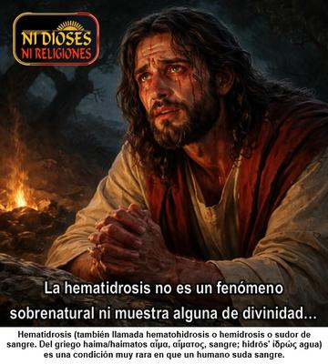

Según el relato de Marcos y Mateo, después de que aquella última cena de Jesús con sus discípulos, los condujo el jueves al anochecer a la falda occidental del Monte de los Olivos, hasta el lugar conocido como Huerto de Getsemaní (Marcos 14:26, Mateo 26:30). Se trataba obviamente de un sitio preciso, donde Jesús sabía que llegarían a arrestarlo las autoridades. Durante toda su vida pública había actuado como alguien que buscaba ser sacrificado en una Pascua judía, emulando a uno de los corderos ofrecidos en holocausto a Yahvé. Todavía tenía tiempo para escapar a un lugar seguro, pero eso destruiría el destino final que se había trazado.


Es obvio que sólo Jesús y Judas sabían lo que allí iba a pasar. Por eso Jesús le había dicho explícitamente: «Lo que vas a hacer, hazlo pronto» (Juan 13:27). Y el hecho de que haya conducido a sus discípulos precisamente al lugar donde sabía que sería arrestado —el sito previamente acordado con Judas—, refuerza la idea de que todo fue planificado. En aquel contexto Judas deja de ser el traidor que todos piensan, para revelarse como el cómplice necesario en una operación cuidadosamente orquestada.
Pero resulta interesante que estando en aquel momento crucial, Jesús comienza a experimentar un miedo profundo ante lo que está por ocurrir. Los evangelios lo describen angustiado y visiblemente perturbado. A pesar de que se había estado buscando el final que quería para que según él se cumplieran las Escrituras, ahora el temor lo hacía flaquear.
Según los evangelios, llevándose aparte a Pedro y a los dos hijos de Zebedeo (Jacobo-Santiago y Juan), les confesó cómo se sentía, pidiéndoles que se quedaran con él, en vela (¿para qué?, ¿no debía estar más bien feliz?). Y después se apartó un poco para orar, pidiéndole a Yahvé que adelantara el tiempo para no tener que sufrir aquella angustiosa espera. Comparó su sufrimiento con una copa que estaba a punto de beber, la cual pide a Yahvé se la aparte; pero como estaba tan confuso, rectificó inmediatamente, diciéndole que en realidad se hiciera lo que él quería.
¿Pero, por qué temía tanto a morir si él se consideraba superior a la muerte y aseguraba ser la vida misma (Juan 11:25-26)? ¿Acaso no existía él desde antes de la creación del mundo (Juan 17:24)? ¿No había ofrecido a sus seguidores la inmortalidad (Mateo 19:29)? ¿No podía él como divinidad, crearse todos los cuerpos humanos que quisiera? Con sólo desearlo, incluso sin que el Espíritu Santo bajara a embarazar mujeres vírgenes cubriéndolas con su sombra (Lucas 1:35).
En medio de aquella angustia, Jesús comenzó de pronto a sudar sangre (Lucas 22:44), lo cual, lejos de ser un fenómeno sobrenatural, tiene una explicación médica conocida: la hematidrosis, una condición extremadamente rara que puede ocurrir bajo niveles extremos de estrés o terror, en momentos de una emoción muy intensa, cuando los capilares sanguíneos se contraen y rompen, mezclándose la sangre con el sudor. Esto significa que Jesús tenía miedo, mucho miedo, lo que no encaja con un ser omnisciente y omnipotente.
Por cierto, hay otro detalle curioso: los evangelios mencionan que Jesús se apartó de sus discípulos para orar, y ellos incluso se quedaron dormidos, por lo que no se comprende cómo apareció después este episodio cuidadosamente narrado, como si alguien hubiera estado tomando nota en la oscuridad de la noche, copiando hasta la última palabra que pronunciaba.
Pero hay algo más: en su arrebato de miedo porque iba a ser arrestado, Jesús llegó incluso a ordenar a sus discípulos que quien no tuviera espada vendiera su capa para comprarse una (Lucas 22:31-34). Y no era lenguaje metafórico, porque los discípulos le respondieron que ya tenían dos (Lucas 22:35-38). Por lo que hay aquí un elemento que los creyentes prefieren ignorar: los discípulos directos de Jesús portaban armas. Así como una escena posterior lo confirma, cuando durante el arresto, uno de ellos corta con su espada la oreja al sirviente del sumo sacerdote (Marcos 14:47, Mateo 26:51, Lucas 22:49-50). El evangelista Juan dice que fue Pedro (Juan 18:10). Afortunadamente todavía no existían las armas de fuego.
Obviamente, esto plantea una evidente contradicción con la imagen del predicador pacifista que instaba a amar a los enemigos (Mateo 5:44, Lucas 6:27) y ponerles la otra mejía (Mateo 5:38, Lucas 6:29).
Finalmente, el evangelio de Marcos añade un detalle que roza lo surrealista: cuando llega al Huerto de los Olivos una multitud armada guiada por Judas, todos los discípulos de Jesús huyen (Marcos 14:50). Decidieron abandonar a su maestro, quizás porque sólo tenían dos espadas y no creían que Yahvé se uniera a ellos en la lucha. Pero entre ellos había un joven que seguía a Jesús, que salió de la oscuridad con el cuerpo cubierto sólo por una sábana, la cual terminó soltando para huir completamente desnudo (Marcos 14:51-52). ¿No es esto extraño?
Se entiende claramente que, en aquel apartado lugar Jesús había decidido reunirse sólo con sus discípulos directos, es decir, con los once que le quedaban. Ni siquiera habían estado presentes su madre o sus hermanos en un momento tan trascendental. Por tanto, este joven que menciona Marcos, tendría que haber sido uno de sus «apóstoles», que el redactor cubre con el anonimato para no tener que dar más explicaciones. Las preguntas se quedan sin respuesta.
Como vemos, al final de todo este relato lo que prevalece es la imagen de un Jesús atrapado entre sus propias ideas, que duda en el último momento si seguir con sus planes; abandonado por sus discípulos cuando más apoyo necesitaba, unos discípulos armados que no eran pacifistas. Un Jesús que experimentó tanto miedo, que sudó sangre. Esto, aunado a un denigrado discípulo que sí fue fiel a sus planes, y que no era ningún traidor, más otro anónimo que en aquel momento de tensión, decidió por algún motivo inexplicable desnudarse.
[Godless Freeman]
Comentarios
Comments powered by Disqus